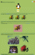

| General Information | Applications | Programming Resources | Images | Animation |
Welcome to the PNG Home Site, maintained by Greg Roelofs. Our hero likes to speak of himself in the third person, but don't let that put you off; this is intended to be a mostly serious set of reference pages for locating information, applications and programming code related to the 31-year-old PNG image format.
Note that the PNG home site has moved four times since 1995 (though the URL has changed only three times, and hopefully never again). The current site is hosted by the excellent folks at SourceForge.
| PNG Site Layout |
The PNG web site is organized into four basic categories of information (blue and white headings below), not counting the separate MNG site (covering PNG's animated and lossy cousins). A complete site map to the 110+ pages is available, but the basics are summarized here.
The informal history below is worth reading both for general background and for a summary of PNG's main features, but most non-programmers will probably find the basic introduction, the FAQ, and perhaps the longer history to be of the greatest interest and utility. The PNG-supporting application lists, on the other hand, are no longer particularly important (or maintained), insofar as virtually every image-related application has supported PNG natively--and well--for more than a decade. They too are now historical in nature.
| PNG General Information |
| PNG-Supporting Applications |
| PNG Programming Resources |
| PNG Images |

PNG Images:| PNG Animation |
So what is PNG, and why is it worthy of its own home site? PNG (pronounced
"ping") is the Portable Network Graphics format, a format for storing
bitmapped (raster) images on computers. Unofficially its acronym stands for
That's only half the story, however; PNG would deserve a home page even if all
that had not taken place, just because it's so darned nifty. Yes, it's not
every day you come across an image format and say, "Outraaageous!"
In fact, you may never say that in your entire lifetime (truly a pity), but
PNG is still cool. Some of its spiffier features
include:
Not exactly spiffy, but worth mentioning anyway:
PNG also supports things like suggested quantization, "smart" extensibility,
a standard color space and lots of other excellent stuff, but let us leave
all that aside for now. Those who want a quick explanation of the main
features can check out Greg's Basic Introduction to PNG
Features. Those who want all of the gory details can either find
a library with the
July 1995 issue of
Dr. Dobb's Journal and read
Lee Crocker's PNG article;
read a copy of Greg's O'Reilly book,
PNG: The Definitive Guide;
or else go read the full Portable Network Graphics
Specification, a reasonably concise
W3C
Recommendation (the very first one!)
that is amazingly well written and understandable. (Greg had no
part in the actual writing of it, so he can say things like that.) See
the PNG documentation page for links to plain
ASCII, PostScript (US letter-size) and PDF versions, and see the W3C's
PNG page and official
press release
for links to related documentation on gamma and color correction.
Note that the PNG specification was updated to version
1.1 on New Year's Eve 1998 (that is, 31 December 1998). It
included new chunks for cross-platform color correction (sRGB and iCCP), a
revised and much more sensible description of gamma correction, and a number of
other minor improvements and clarifications (all fully backward compatible, of
course!).
A second, more minor update (version 1.2)
was released in August 1999; its only change was the addition of the iTXt
chunk (international text).
In addition, PNG began the long process of international
standardization*
in 1999 (see the 10 May 1999 news
item for details), thanks largely to its inclusion in VRML97. It finally completed that process and became the joint
ISO/IEC standard 15948:2004 nearly five years later
(see the 3 March 2004 news item),
a few months after it was also rereleased by the W3C (with identical content)
as their "PNG Second
Edition" Recommendation.
And the design of the multi-image extension to PNG known as MNG is officially complete
(version 1.0 of the MNG specification was released on 31 January 2001),
with quite a number of applications available and a
free reference library, too.
By now you're undoubtedly drooling over such an incredibly well-designed
image format and wondering where you can find applications or programming tools that
support it. Well, wonder no further! Greg aims to please.
Last modified
12 January 2026,
you betcha.
(By the way, despite the implications in some of CompuServe's old press
releases and in occasional trade-press articles, PNG's development was not
instigated by either CompuServe or the World Wide Web Consortium, nor was
it led by them. Individuals from both organizations contributed to the
effort, but the PNG development group exists as a separate, Internet-based
entity.)
*PNG was already part of the
UK profile for MHEG-5 on digital terrestrial television; MHEG-5 is the
international standard for a next-generation teletext system that shares a
number of features with HTML. PNG is also used in MHP, the Java-based Multimedia Home Platform for digital
video systems, and was included in HAVi, the somewhat defunct Home Audio-Video Interoperability standard for
1394-based home networking.
General Information
Applications
Programming Resources
Images
Animation
Copyright © 1995-2026 Greg Roelofs
(contact).
png-printable.html